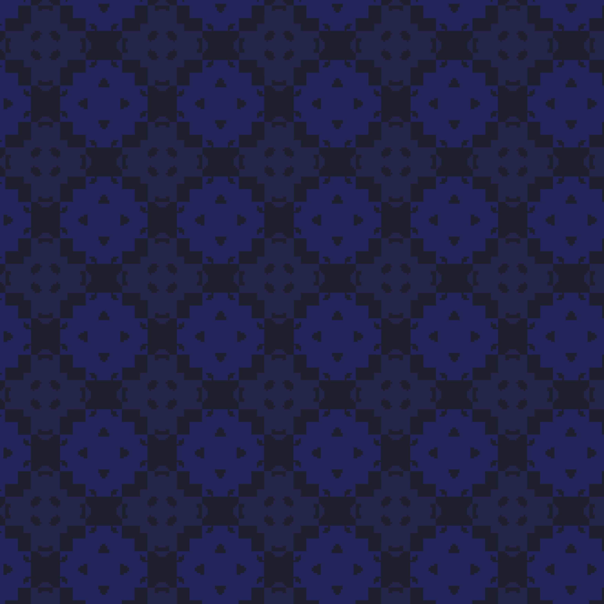
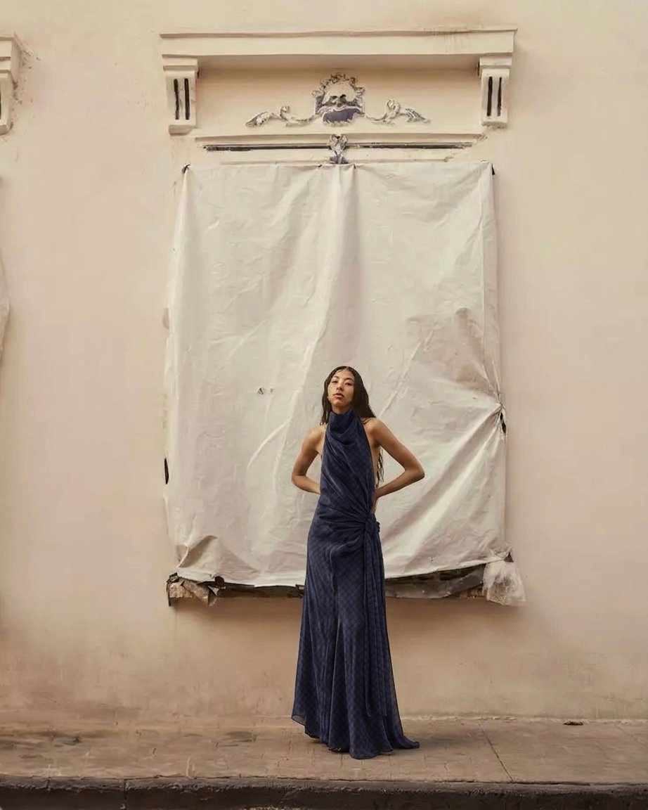
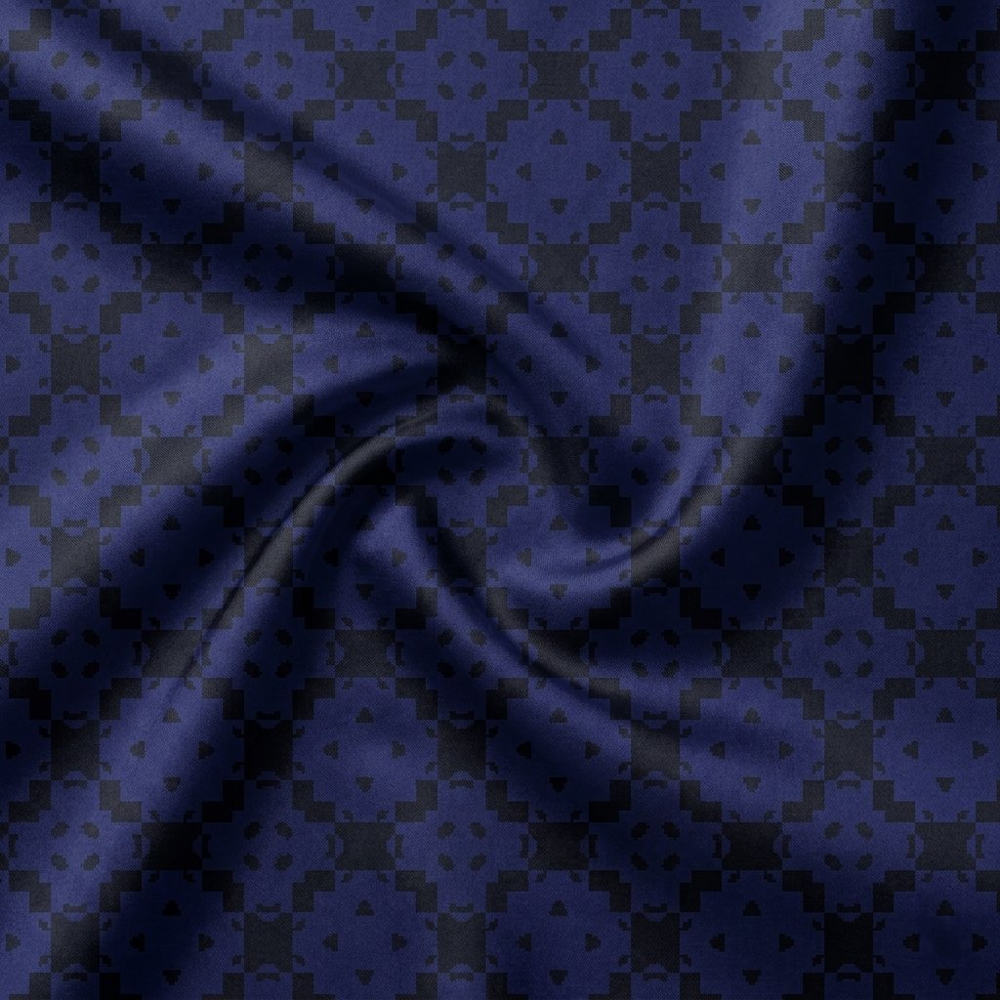
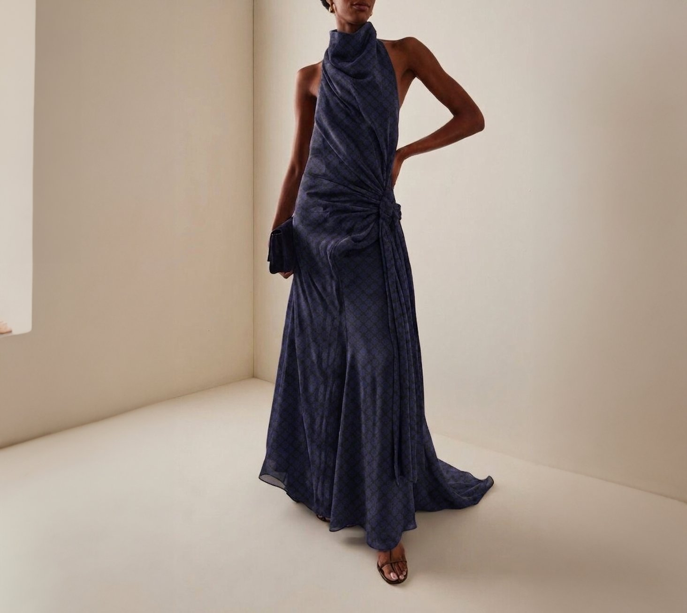

Social media has fundamentally changed the relationship between people and their clothes.
Trend cycles that once lasted around 20 years have compressed to months, sometimes weeks. The pressure to stay current is constant, and it is manufactured. Platforms reward novelty and punish repetition, turning the wardrobe into something that is never quite finished, never quite right.
The consequence is a specific kind of disposal. People are not discarding worn-out garments, they are discarding perfectly good ones. Not because the clothes have failed, but because they no longer feel current. 84% of shoppers made impulse purchases in 2023. New clothing purchases rose by 38% between 2020 and 2024. The cycle accelerates, and each acceleration makes the last purchase feel older, faster.


